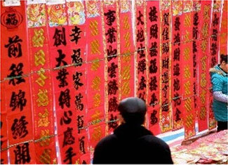

安远楹联之乡
初冬时节，走进全国第六个“中国楹联之乡”安远县，你可以看到不少创联、写联、咏联的热闹场面。该县群众创作的“安远脐橙一枝独秀，东江源水万古长流”、“林海荫浓，千山翡翠千山赋；脐橙香远，一缕芳菲一缕诗”等对联，让人感受到阵阵清新之风和愉悦之情。这是该县大力弘扬对联这一优秀民间文化，让它正风启智促进经济、社会发展带来的喜人景象。此举不但丰富了群众的精神文化生活，激发了农民增收致富奔小康的豪情壮志，还展现了东江源头客家文化名县的独特风采，成为该县一道独特的文化风景线。
安远县写联咏联的文化氛围历来就很浓。每逢春节、祝寿、婚嫁等喜庆日子，写对联、贴对联，是安远城乡群众必不可少的一种庆祝方式。如何进一步弘扬对联文化，促进经济和社会发展？该县大力提升对联文化品位，积极探索对联文化发展的新路子，以此来推动文化名县的建设。专门建立对联教学基地，编印对联培训教材《对联入门》，举办对联知识培训班，成立了县、乡（镇）和村（居委会）三级楹联学会。还通过举办对联知识讲座、知识竞赛、开展写联赠联活动等形式，宣传介绍对联文化。到目前为止，该县共举办“永清岩征联”等7次征联活动，举办了“榕韵杯”等7次全县性的对联大奖赛，激发了群众对楹联文化的兴趣，进一步扩大了对联在该县的影响，使对联文化在安远得到推广普及，实现了从单一的小文化到“与经济社会发展相互交融”的大文化转变，推动着全面建设小康社会的步伐。